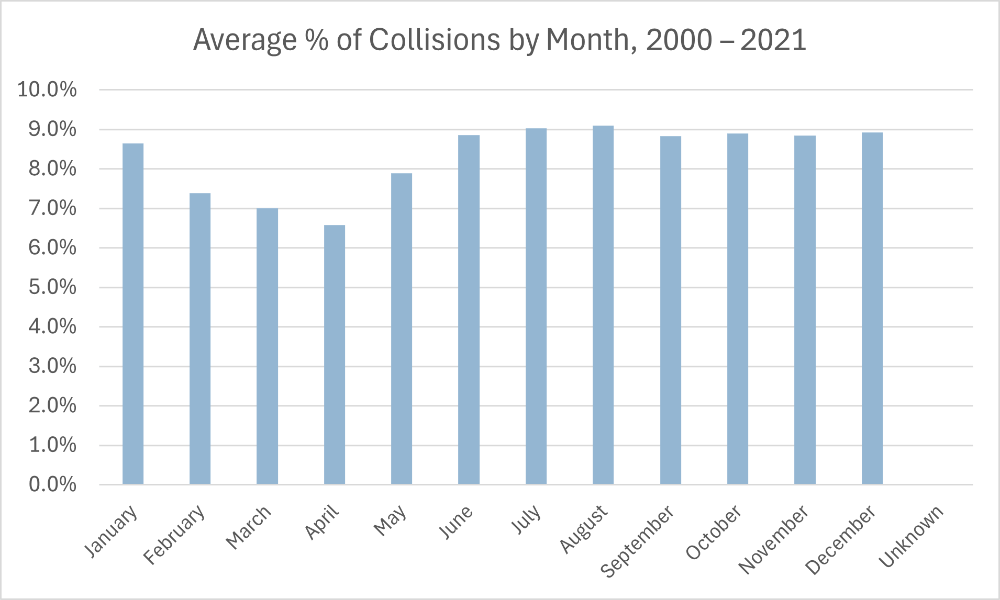

Speeding Statistics
- In 2021, speeding (exceeding the speed limit or driving too fast for the conditions) was a contributing factor in 24.7% of fatal collisions, more than any other single contributing factor. (Transport Canada, 2022)
- Reports indicate that the main factor contributing to motorcycle fatalities in Canada was motorcycle speed, causing 12% of the deaths. (Carsurance.net, 2020)
- According to the Canadian Association of Chiefs of Police, 40% of speeding drivers were aged 1624. 80% of young adult passengers who were killed in a car crash were being driven by a similar-aged driver. (Carsurance.net, 2020)
- In 2011, one in three speeding drivers involved in a fatal crash had been drinking. (Transport Canada, 2011)
- Teens are more likely than older drivers to speed and allow shorter following distances. (Texas A&M Transportation Institute, 2019)
- A survey of Canadian drivers in 2019 found that only 27% of them never drive at well over the posted speed limit.
- In a survey of Ontario drivers in 2022, 83% of them said they had witnessed other drivers speeding, and 43% of them admitted to speeding themselves. (CAA SCO, 2022)
- A 1% increase in a vehicle's speed increases the drivers fatality risk by 4% to 12%. An increase of the speed limit by 15 km/h on a road increases the fatality rate of drivers by 10%. The risk of being involved in a severe crash is twice as great at 65 km/h than it is at 60 km/h. Injuries from a crash at 50 km/h are comparable to injuries caused by falling from a three-story building. Injuries from a crash at 100 km/h are comparable to injuries caused by falling from a twelve-story building. (Traffic Injury Research Foundation, February 2014)
- National data shows that even a 10-mph speed increase ups the risk of a crash by 9.1%. (Fortune, 2016)
- A CAA poll of 2,503 Canadians carried out in October 2023 found that 88% of them were deeply worried about speeding in residential areas. Nevertheless, 22% of them admitted to speeding in residential areas themselves, at least occasionally. CAA also asked Canadians to list the top dangerous driving behaviours they engaged in themselves. The top five were speeding on the highway (45%), engaging with technology in their car (32%), speeding in residential zones (22%), driving well over the speed limit (19%), and driving when too tired (18%). (CAA, January 2024)
- American teens do not consider driving at 5 to 10 mph above the speed limit to be dangerous. (Texas A&M Transportation Institute, 2019)
Accident Statistics
- In Canada in 2021, there were 83,590 traffic collisions involving injuries, fatalities, or both. However, this figure is 46.4% lower than the 155,838 serious collisions that occurred in the year 2000. The number of serious collisions has generally trended downward over the period 2000 2021 despite Canadas growing population. See the following chart. (National Collision Database, November 2023)
- Crash risk is highest during the first year that drivers are licensed. (CDC, 2018)
- From 2016 to 2021, an average of 17.5% of traffic collisions each year occurred under conditions of adverse weather, including rain (8.6%); snow (6.5%); and freezing rain, sleet or hail (0.6%); among others. (Canada National Collision Database, November 2023)
- In 2021, rear-end collisions accounted for 21.1% of all traffic collisions more than any other type of collision. (Canada National Collision Database, November 2023)
- In 2021, 50.7% of traffic fatalities resulted from multi-vehicle collisions; 49.3% of fatalities resulted from single-vehicle events (such as a rollover or a collision with a stationary object). (Canada National Collision Database, November 2023)
- In 2021, the six most common types of fatal collisions were as follows: head-on collision with another vehicle (25% of the total), running off the right shoulder (14%), running off the left shoulder (13%), right-angle (side) impact from another vehicle (11%), hitting a stationary object (10%), and being rear-ended by another vehicle (9%). (Canada National Collision Database, November 2023)
- Certain driver performance errors, including committing a right-of-way error, sudden or improper braking or stopping, and being unfamiliar with a vehicle or roadway, increased the risk of crashing by hundreds of times. (Virginia Tech Transportation Institute, 2016)
- The total social cost of traffic collisions was estimated to be $36 billion in 2020. (Social cost includes the costs of deaths, injuries, and the mobilization of emergency services.) This figure represented about 1.9% of Canadas Gross Domestic Product that year, or $947 per capita. Still, the social cost of collisions per capita when measured in real (inflation-adjusted) dollars has trended almost steadily downward since 1996, with $947 in 2020 being the lowest cost per capita to date. (Transport Canada)
- There are about 40,000 railway crossings in Canada. Each year, over 100 Canadians are killed or seriously injured from railway crossing attempts or trespassing on railways. A motorist is 40 times more likely to be killed in a collision with a train than in a collision with another vehicle. (Operation Lifesaver Canada, 2017)
- Most collisions between vehicles and trains happen within 40 km of the motorists home. 66% of train-vehicle collisions happen at crossings with active warning devices (such as gates, lights, or bells). (Operation Lifesaver Canada, 2017)
- In Canada in 2023, there were 229 railway crossing and trespassing incidents, resulting in 66 fatalities and 39 serious injuries. The greatest number of incidents occurred in Ontario: 63 railway crossing and trespassing incidents (22% of Canadas total), resulting in 29 fatalities (44% of the total) and 15 serious injuries (39% of the total). (Operation Lifesaver Canada, 2024)

Driving Ability Statistics
- In 2018, the Insurance Corporation of British Columbia (ICBC) found that over 40% of drivers scored lower than 80% on ICBCs Drive Smart Refresher Test, a 20-question knowledge test of driving rules. (On the official knowledge test of driving rules, 80% is the usual minimum passing score.)
- More than 90% of road crashes are the result of human error or condition. (Traffic Injury Research Foundation, 2019)
Aggressive Driving Statistics
- A survey of Canadian drivers in 2006 found that 12% admitted to driving well over the speed limit, 9% admitted to speeding up to get through a traffic light, 6% admitted to using their horn when they got annoyed, 4% had made rude gestures at other drivers, and 3% had taken driving risks for fun. (Traffic Injury Research Foundation, 2006)
- A survey of Canadian drivers in 2017 found that 31% of them admitted to having driven through a red light, and 29% of them admitted to disobeying road signs while driving. (belairdirect, 2017)
- A survey of 1,027 Canadian drivers in 2021 found that more than one-third of them admitted to engaging in various aggressive driving behaviours. The most common, of course, was speeding (33% of surveyed drivers). 9% of drivers admitted to running a red light. Smaller but still significant percentages admitted to even riskier behaviours. See the following chart. (Finder.com, September 2021)
- Male and younger drivers ages 1939 were significantly more likely to engage in aggressive behaviours. (AAA Foundation for Traffic Safety, 2016)
- In a poll of 2,009 Canadians from November to December 2021, respondents listed the following aggressive driving behaviours as constituting serious threats to their safety: running red lights (93%), aggressive driving generally (92%), speeding on residential streets (91%), and driving well over the speed limit (90%). (CAA, December 2021)
Pedestrian Safety Statistics
- From 2018 to 2020, the rate of pedestrian fatalities in traffic collisions was 1.01 deaths per 100,000 population for males, compared with only 0.61 deaths per 100,000 population for females.
- From 2018 to 2020, the rate of pedestrian fatalities was 2.65 deaths per 100,000 population for males aged 70 years and older, compared with 0.80 deaths per 100,000 population for males aged 69 years and younger. In contrast, among women aged 70 and older, the fatality rate was 1.68 deaths per 100,000 population. Considering both males and females, the pedestrian fatality rate for pedestrians aged 90 and older was 3.07 per 100,000 population about six times as high as for pedestrians aged 30 to 49. See the following chart. (Statistics Canada, October 2023)
- From 2018 to 2020, the most common locations for pedestrian fatalities were intersections (21% of all pedestrian fatalities), roadways not at intersections (14%), highways (13%), parking lots or private property (10%), and railways (8%). (Statistics Canada, October 2023)
-
From 2018 to 2020, the most common risk factors for
pedestrian fatalities were as follows:
- Nighttime (26% of all pedestrian fatalities)
- Environmental factors (such as adverse weather, limited visibility or poor road conditions) (23%)
- Drugs or alcohol (consumed by the driver or the pedestrian) (20%)
- Other modifiable factors (such as distractions, vehicle speed, vehicle mechanical issues, or improper lane change or turn) (15%)
- Pedestrian wearing dark clothing (9%) (Statistics Canada, October 2023)
- Pedestrians have a 90% chance of surviving a crash at 30 km/h (19 mph) or less but only a 50% chance at higher speeds. (AutoInsurance.org, 2018)
- For a pedestrian, the risk of death or serious injury increases along an S-shaped curve as the vehicle impact speed increases. The following charts from the AAA Foundation for Traffic Safety show the risk of severe injury to a pedestrian and the risk of death to a pedestrian as a function of vehicle impact speed. The risk was calculated from a sample of 422 pedestrians who had been struck by a car or light truck during the years 1994 through 1998. (AAA Foundation for Traffic Safety, 2011; NHTSA, 2023)
- A pedestrian who is struck at 32 km/h (20 mph) has a 10% chance of dying. A pedestrian who is struck at 64 km/h (40 mph) has an 80% chance of dying. (Active Transportation Alliance, 2018)
Bicyclist Safety Statistics
- Despite Canadas generally colder climate, the percentage of commuting trips taken by bicycle in Canadian cities is about three times higher than the percentage in US cities. For example, in the Yukon, 2.0% of commuting trips are by bicycle, compared with 0.8% in California and 0.6% in Florida in the United States. (Victoria Transport Policy Institute, 2006)
- In cities and surrounding areas with a population of at least 100,000, 1.6% of Canadians commuted to work by bicycle in 2016. (Statistics Canada, November 2017)
- On the other hand, just 16% of Canadians cycle at least once a week, compared with 25% of the US population and 35% of the worlds population. (Made in CA, January 2024)
- An average of 74 cyclists die in crashes each year. About 73% of those crashes involve a collision with a motor vehicle. Another 25% of those crashes involve a collision with another cyclist or a stationary object. (CAA, 2020) However, because of Canadas growing population, the fatality rate of cycling decreased from 2.5 deaths per one million population in 2006 to 1.3 deaths per one million population in 2017. (Statistics Canada, July 2019)
Wildlife Safety Statistics
- Over 45,000 non-fatal (to humans) collisions with wildlife occur each year. (Traffic Injury Research Foundation, 2020)
- In a survey of Canadian drivers conducted in 2014, 9.2% of drivers reported having at least one collision with an animal. Most of these drivers reported collisions with a small mammal, such as a fox or squirrel. See the following chart. (Traffic Injury Research Foundation, September 2016)
- Between 2000 and 2020, 570 persons were killed in wildlife-vehicle collisions, representing about 1.1% of all traffic fatalities. 52% of these crashes were collisions with a moose, 32% were collisions with a deer, and 6% were collisions with other animals. In that period, there was a long-term downward trend in wildlife-vehicle collision fatalities, from 34 fatalities in 2000 to 26 fatalities in 2020, although there were several sharp rises along the way. (Traffic Injury Research Foundation, November 2023)

Winter Driving Statistics
- From 2000 through 2021, an average of 9.1% of collisions each year took place in the month of August, more than in any other month. An average of 6.6% of collisions each year took place in April, fewer than in any other month. See the following chart. (Canada National Collision Database, November 2023) 
- In the year 2010, environmental conditions were a major contributing factor in 30% of vehicle collisions. Five percent of fatal accidents occur during snowfall. (Greg Monforton and Partners, 2020)
- In the year 2010, snow drift was a factor in over 500 accidents. Packed snow or ice was present in over 7,500 traffic accidents (more than 26% of total accidents). (Greg Monforton and Partners, 2020)
- In the year 2010, wet conditions, loose snow, or slush were present in nearly 3,500 traffic accidents (more than 12% of total accidents). (Greg Monforton and Partners, 2020)
- In 2019, 7,113 collisions (6.8% of all collisions) and 85 fatal collisions (5.2% of all fatal collisions) occurred while it was snowing. An additional 789 collisions (0.8% of all collisions) and 10 fatal collisions (0.6% of all fatal collisions occurred during freezing rain, sleet or hail. (Canada National Collision Database, November 2023)
- In the year 2020, heavy snow was falling during nearly 1,500 accidents, light snow was falling during over 900 accidents, and sleet or hail was falling during over 175 accidents. (Greg Monforton and Partners, 2020)
- Weather-related vehicle accidents kill more people annually than large-scale weather disasters. (The Weather Channel, 2018)
- In the United States in 20072016, about 21% of all collisions involved adverse weather. An average of 5,376 persons per year were killed in weather-related crashes. In comparison, the average number of deaths per year from floods, lightning, tornadoes, hurricanes and heat combined was 379. (The Weather Channel, February 2022) In Canada in that same period, 18.4% of all collisions and an average of 374 fatalities per year (17.5% of all traffic fatalities) involved adverse weather, such as rain, snow, hail, sleet, freezing rain, strong winds, or other weather conditions that impeded visibility. (Canada National Collision Database, October 2023)
- It takes up to 10 times longer to stop on snow and ice than it does on dry pavement. (Geico Insurance, 2018)
- A four-wheel traction system can help a car get moving in snow and ice and provide extra control when turning, but it doesnt help the vehicle stop much faster than a front- or rear-wheel-drive car. (US News & World Report, 2018)
Child Safety Statistics
- Extreme heat affects infants and small children more quickly and dramatically than adults because of their size. A study funded by General Motors of Canada found that on a day when daytime temperature was 35C (95 F), the air temperature inside a previously air-conditioned small car exposed to the sun rose to 50C (122 F) within 20 minutes. Within 40 minutes, the temperature soared to 65.5 C (150 F). Leaving a window slightly open did little to mitigate this.
- Children under the age of 5 are at the highest risk for injury or death caused by a vehicle backing up over them. (KidsAndCars.org, 2018)
- Over 60% of backover accidents involve a truck or SUV. (KidsAndCars.org, 2018)
- Over 90% of Canadians wear seat belts while travelling in a motor vehicle. (InsuranceHotline.com, 2011)
- Drivers ages 1624 tend to have the lowest seat belt use rate. (Safe Ride 4 Kids, 2018)
- When installed and used properly, child car seats can reduce the risk of death by 71% for infants under one year of age. For children ages 4 and younger, child car seats reduce the risk of serious injury by 67%. For children of appropriate ages, booster seats provide 59% more protection than seat belts alone. (CAA, 2024)
Trucking Statistics
- From 2012 to 2021, the number of registered commercial vehicles increased by 24%, from 1,052,825 to 1,310,063. (Statistics Canada, November 2023)
- In 2021, there were 1,310,063 commercial vehicles, consisting of 648,191 commercial vehicles weighing between 4,536 and 11,793 kg, 597,666 vehicles weighing 11,794 kg or more, and 64,206 buses. (Statistics Canada, November 2023)
- In the fourth quarter of 2021, 65% of commercial vehicles were straight trucks, 33% were tractor-trailers, and 2% were buses. 65% of commercial vehicles were classified as heavy vehicles, and 35% of commercial vehicles were classified as medium vehicles. (Transport Canada, November 2023)
- In Canada in 2022, there were 609,850 registered heavy-duty trucks, making up 2.3% of all registered motor vehicles, and 674,329 registered medium-duty trucks, making up 2.6% of all registered motor vehicles. Heavy-duty trucks have a gross vehicle weight rating (GVWR) of 11,794 kg or more (GVWR classes 7 and 8). Medium-duty trucks have a GVWR of between 4,536 and 11,793 kg (GVWR classes 3, 4, 5 and 6). (Statistics Canada, November 2023)
- In 2018, trucks carried 63.7 million shipments with an average weight of 11.8 tonnes, for an average distance of 597 km per shipment. (Statistics Canada, February 2020)
- For domestic transportation in 2018, 77.7% of the volume of goods transported within Canada was moved by truck, 22.2% was moved by train, and a negligible volume (0.1%) was moved by air. (Library of Parliament, May 2022)
- In 2020, 54.2% of exports to the United States (as measured in dollars) were shipped by truck; 71.5% of imports from the United States were shipped by truck. (Library of Parliament, May 2022)
- In 2022, large trucks travelled an average of almost 230,000 km per year, compared with 16,500 km for passenger vehicles. (Traffic Injury Research Foundation, 2022)
- In 2019, the trucking and logistics sector employed 3.6% of Canadas total workforce. (Library of Parliament, May 2022)
- Since 2009, the number of large trucks in fatal crashes has declined, ranging from 380 to 393. (Transport Canada, 2015)
- Nearly 2,000 Canadians are killed each year and another 10,000 seriously injured in collisions involving a heavy truck (one with a gross vehicle weight greater than 12,000 pounds). Even on a per-distance-travelled basis, large trucks have a fatality rate double the rate of all other vehicles. (The Newfoundland and Labrador Independent, 2018)
- From 2012 to 2019, the numbers of collisions, fatalities, and serious injuries involving commercial vehicles declined by 1.1%, 10.2%, and 17% respectively. These trends were followed by sharp declines in 2020 and partial recoveries in 2021, probably reflecting the effects of the COVID-19 pandemic on trucking. See the following chart. (Transport Canada, November 2023)
- From 2012 to 2021, the number of registered commercial vehicles increased by 24%, from 1,052,825 to 1,310,063. As a result, the rates of commercial vehicle collisions, fatalities and serious injuries declined by larger percentages than the raw numbers shown in the above chart. In that period, the collision rate per 10,000 commercial vehicles decreased by 36%, from 429 to 275. The fatality rate per 10,000 commercial vehicles decreased by 32%, from 3.8 to 2.6, and the rate of serious injuries per 10,000 commercial vehicles decreased by 43%, from 10.9 to 6.2. (Transport Canada, November 2023)
- Likewise, estimated vehicle kilometres travelled (VKTs) increased by 30%, from 37.7 billion in 2012 to 48.9 billion in 2021. As a result, from 2012 to 2021, the commercial vehicle collision rate per billion VKTs decreased by 38%, from 1,198 to 737; the fatality rate per billion VKTs decreased by 34%, from 10.6 to 7.0; and the serious injury rate decreased by 46%, from 30.5 to 16.6. (Transport Canada, November 2023)
- The years 2020 and 2021 bucked the longer-term downward trends in a few ways. From 2020 to 2021, the collision rate per 10,000 commercial vehicles increased by 3%, and the serious injury rate increased by 4% in 2020 and by 3% in 2021. (None of the rates per billion VKTs increased in that period, because of a sharp increase in VKTs then.) (Transport Canada, November 2023)
- For commercial vehicles from 2012 to 2021, there were 1,281 fatal collisions for straight trucks, 1,919 fatal collisions for tractor-trailers, and 191 fatal collisions for buses. There were 34,756 serious-injury collisions for straight trucks, 27,581 for tractor-trailers, and 12,783 for buses. Tractor-trailers made up the largest share of fatal collisions, but straight trucks made up the largest share of collisions involving serious injury. See the following two charts. (Transport Canada, November 2023)
- In the period 20122021, 63% of fatal commercial vehicle collisions were two-vehicle collisions, 20% were single-vehicle collisions, and 17% were collisions involving more than two vehicles. 62% of commercial vehicle collisions involving injury were two-vehicle collisions, 23% were single-vehicle collisions, and 15% were collisions involving more than two vehicles. (Transport Canada, November 2023)
- In the period 20122021, the most frequent configurations of fatal commercial vehicle collisions were head-on collisions (30%), right-angle collisions (12%), and rear-end collisions (12%). For commercial vehicle collisions involving injury, the most frequently occurring configurations were rear-end collisions (27%), other single-vehicle collision configurations (11%), and right-angle collisions (10%). (Other single-vehicle configurations refers to single-vehicle collisions that do not fit any of the existing categories of single-vehicle collisions such as hitting a moving object, hitting a stationary object, running off the road, or rolling over.) (Transport Canada, November 2023)
- In the period 20122021, the most fatal commercial vehicle collisions per month occurred during the months of August, October and November, whereas January was the month with the most injury collisions. The fewest collisions per month of both types occurred in April. See the following chart. (Transport Canada, November 2023)
- In the period 20122021, 70% of fatal commercial vehicle collisions and 78% of commercial vehicle collisions involving injury occurred between 6 a.m. and 6 p.m. (Transport Canada, November 2023)
- In the period 20122021, most commercial vehicle fatal collisions (74%) occurred on rural roads, while most commercial vehicle injury collisions occurred on urban roads (56%). (Transport Canada, November 2023)
- Of the vehicles involved in fatal commercial vehicle collisions in 20122021, 19% were straight trucks, 31% were tractor-trailers and 3% were buses. Of the vehicles involved in injury collisions during that period, 24% were straight trucks, 20% were tractor-trailers and 9% were buses. (Transport Canada, November 2023)
- In the period 20122021, more commercial drivers aged 45 to 54 were involved in fatal commercial vehicle collisions than commercial drivers in any other age group. This was true for straight trucks, tractor-trailers and buses. See the following chart. (Transport Canada, November 2023)
- In the period 20122021, only about 15% of those killed in commercial vehicle collisions were occupants of the commercial motor vehicle (CMV). Far more were occupants of other vehicles involved in the collision. However, about 29% of those seriously injured in commercial vehicle collisions were occupants of the CMV. See the following two charts. (Transport Canada, November 2023)
- For most fatal and injury commercial collisions, no driver-related contributing factors were identified. Identified driver-related factors were distraction/inattention (8% of fatal collisions, 14% of injury collisions); driving too fast for conditions (5% and 9% respectively); fatigue (1.5% of both fatal and injury collisions); and driving under the influence (1.2% and 0.6% respectively). The incidence of fatigue is likely greatly underestimated because of a lack of objective evidence for fatigue. (Transport Canada, November 2023)
- According to an at-fault analysis, Canadian drivers of large trucks were found to be at fault in just 13% of fatal crashes, compared with 39% for car drivers. (Traffic Injury Research Foundation, 2022)
- In the fourth quarter of 2021, the average age of commercial vehicles in Canada was 11.6 years. The average age of medium trucks (class 36 vehicles) alone was 11.1 years, compared with 11.9 years for heavy trucks (class 78 vehicles) alone.
- 3,864 US fatal crashes involved trucks over 10,000 lbs. (FMCSA, 2016)
- As of January 2024, the median annual salary for a Canadian heavy truck driver is $54,273. The salary range is from $38,257 per year (10th percentile) to $75,451 per year (90th percenxtile), not counting bonuses and benefits. (Salary.com, January 2024)

Bus Driving Statistics
- In 2021, there were 64,206 buses in Canada, making up 0.3% of all registered motor vehicles. (Statistics Canada, November 2023)
- In 2021, urban transit buses travelled a total of 1,229,984,234 kilometres. (Statistics Canada, June 2023)
- In 2018, students were about 80 times more likely to get to school safely when taking a school bus instead of travelling by car. (Transport Canada, 2019)
- In 2020, school buses accounted for 0.3% of fatal collisions and 0.1% of injury collisions. Transit buses accounted for 0.3% of fatal collisions and 0.4% of injury collisions. Intercity buses accounted for 0.1% of fatal collisions and 0.1% of injury collisions. Buses of unspecified type accounted for 0.1% of fatal collisions and 0.1% of injury collisions. These figures were dwarfed by the rates of fatal and injury collisions for other types of vehicles. (Transport Canada, December 2022)
- Fatalities on school buses account for less than 0.1% of all traffic fatalities in Canada. Between 2009 and 2018, there was just one school bus passenger fatality on Canadian roads. (Transport Canada, 2019)
- As of January 2024, the median annual salary for a Canadian city transit bus driver is $44,091. The salary range is from $33,629 per year (10th percentile) to $56,173 per year (90th percentile), not counting benefits. (Salary.com, January 2024)
- As of January 2024, the median annual salary for a Canadian school bus driver is $38,130. The salary range is from $24,091 per year (10th percentile) to $54,062 per year (90th percentile), not counting benefits. (Salary.com, January 2024)
Taxi/Ridesharing/Limousine Statistics
- As of 2012, there were over 50,000 taxi drivers. Immigrants made up almost one-quarter of Canadas population but about half of Canadas taxi drivers. (Citizenship and Immigration Canada, 2012)
- The median taxi driver's salary is $42,285 per year, with a range of between $33,078 per year (25th percentile) and $54,056 per year (75th percentile). (Glassdoor, December 2023)
- According to the 2006 Census (the last time such a comprehensive study of immigrant taxi drivers was done), about 44.1% of taxi drivers and 52.9% of immigrant drivers had at least some postsecondary education. 9% of taxi drivers held a bachelors degree; 3% of drivers held a masters degree; and 0.5% of drivers held a doctorate or medical degree.
- From 2000 to 2012, taxi drivers had a higher risk of being murdered than workers in any other occupation. Taxi drivers were twice as likely as police officers to be a victim of homicide while working. (CBC News, 2012)
- According to Uber, there were about 100,000 Uber drivers and delivery people (i.e., DoorDash) in Canada in 2022. (Uber, 2022)
- As of December 2023, the average hourly wage of an Uber driver is typically $20.59, but chance earnings can range from $15 to $31 per hour. (Dundas Life, December 2023)
- The effects of ridesharing services on the total number of fatal collisions are unclear. Various researchers have found either positive effects, negative effects, or no significant effects. For example, one study by the University of Chicago and Rice University in 2020 found a 23% increase in fatal collisions and fatalities associated with the introduction of ridesharing. However, most of these studies were based on the timing of entry of ridesharing services into certain communities (i.e., what happened in the community after ridesharing started?) and failed to account for the major differences in ridesharing activity among communities. Using proprietary data on ridesharing activity provided by Uber, a study by the US National Bureau of Economic Research in July 2021 found that ridesharing was associated with a 4% reduction in traffic fatalities and a 6.1% reduction in alcohol-related traffic fatalities.